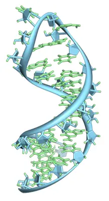

Wave Intelligence Lab · CUHK
DuetRNA
RNA sequence–structure co-design
with base and sugar frames
48.67%Backbone
designability
designability
+7.67 pp vs RNA-FrameFlow
IF / RhoFold · scTM ≥ 0.45 · 600 samples, 40–150 nt
